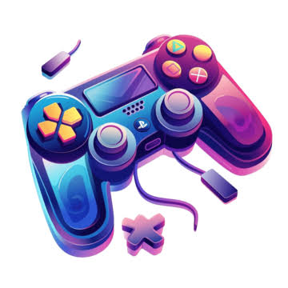
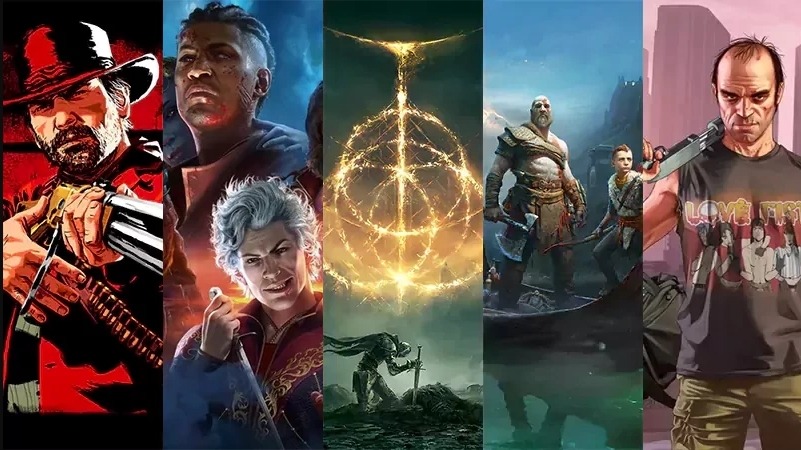
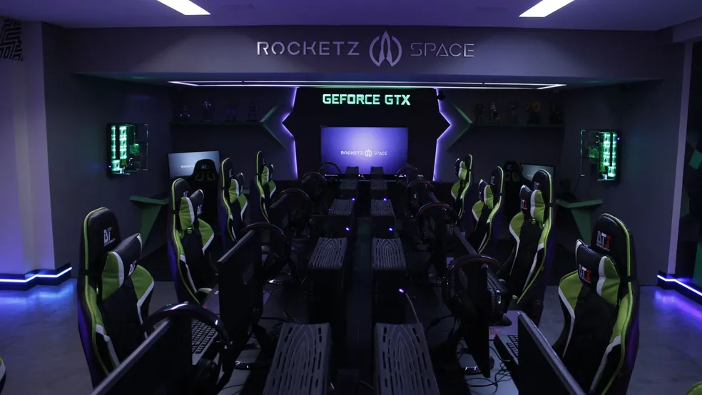

EntretenimentoJogos
O que são jogos eletrônicos
Jogos eletrônicos (ou videogames) são experiências interativas criadas para entretenimento, desafio ou até aprendizado. Vão desde jogos simples de celular até produções gigantescas que rivalizam com filmes de Hollywood em orçamento e narrativa.
Jogos AAA

O termo "AAA" (triple A) é usado para os jogos de maior orçamento e produção da indústria, geralmente feitos por grandes estúdios. Eles costumam ter gráficos de ponta, trilhas sonoras orquestradas e campanhas de marketing intensas, mas nem sempre são os mais inovadores — muitos jogos independentes (indies) surpreendem justamente por fugir dessa fórmula.
Launchers e promoções
Launchers são plataformas usadas para comprar, baixar e jogar títulos digitais — como Steam, Epic Games Store e Rockstar Games Launcher. Cada uma tem sua própria loja e promoções recorrentes, geralmente em datas como Black Friday e liquidações de verão, quando jogos podem ter descontos de até 90%. Vale sempre comparar preços entre plataformas antes de comprar.
eSports

Os esportes eletrônicos transformaram jogos competitivos em espetáculos assistidos por milhões de pessoas, com times profissionais, patrocínios e prêmios milionários em jogos como League of Legends, CS2 e Valorant.
Jogos e aprendizado
Jogos também são usados como ferramenta educacional — a chamada "gamificação" aplica elementos de jogos (pontos, níveis, desafios) em contextos de ensino, tornando o aprendizado mais engajante.